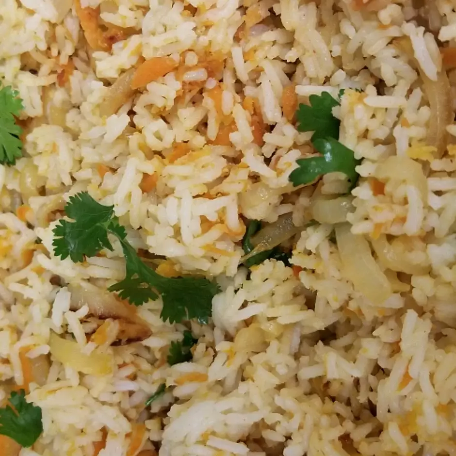

Carrot Rice

Fragrant basmati rice sauteed with carrots, onions, fresh ginger, peanuts, and cilantro. You will be surprised to taste this delicious rice.
Ingredients
- 1 cup basmati rice
- 2 cups water
- ¼ cup roasted peanuts
- 1 tablespoon margarine
- 1 onion, sliced
- 1 teaspoon minced fresh ginger root
- ¾ cup grated carrots
- ¾ cup grated carrots
- cayenne pepper to taste
- chopped fresh cilantro
Steps
- Step 1Combine rice and water in a medium saucepan. Bring to a boil over high heat. Reduce heat to low, cover with lid, and allow to steam until tender, about 20 minutes.
- Step 2While rice is cooking, grind peanuts in a blender and set aside. Heat the margarine in a skillet over medium heat. Stir in the onion; cook and stir until the onion has softened and turned golden brown about 10 minutes. Stir in ginger, carrots, and salt to taste. Reduce heat to low and cover to steam 5 minutes. Stir in cayenne pepper and peanuts. When rice is done, add it to skillet and stir gently to combine with other ingredients. Garnish with chopped cilantro.